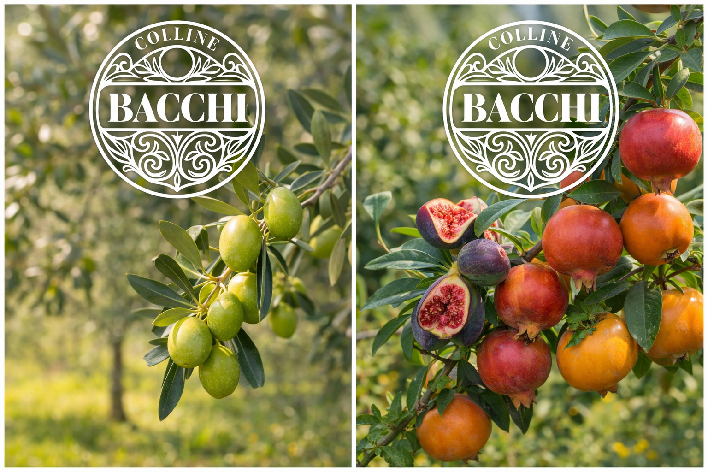
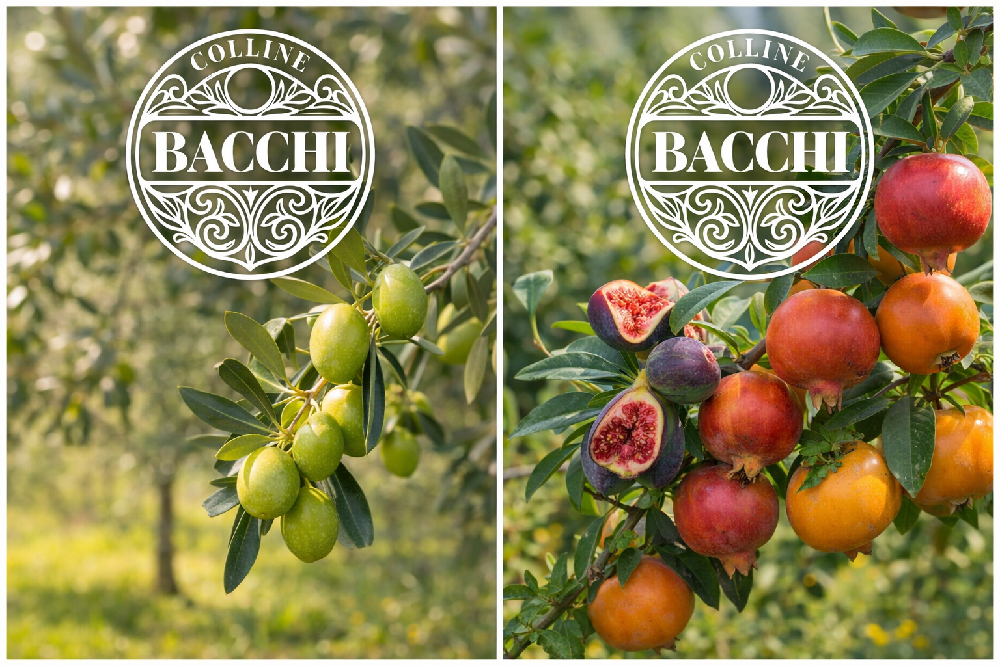

Colline Bacchi
Colline Bacchi è un’azienda agricola familiare situata sulle colline di Civitanova Alta, nelle Marche. Coltiviamo la terra con un approccio diretto, concreto e rispettoso dei suoi tempi.
Filosofia produttiva
Il nostro lavoro parte dal rispetto del territorio e dalla gestione diretta delle coltivazioni, senza forzature produttive.
Approccio agricolo
- Osservazione del terreno
- Interventi mirati
- Lavoro manuale centrale
- Scala agricola controllata
Il territorio
L’azienda si trova a Civitanova Alta, a circa 150 metri sul livello del mare, in un contesto collinare tipico delle Marche.
Clima ed esposizione
Ventilazione naturale, esposizione e biodiversità incidono direttamente sulle coltivazioni.
Prodotti agricoli
Olio Extravergine di Oliva
Olio ottenuto da olive coltivate in azienda, da piante non intensive, nel rispetto dei cicli naturali.
 

Frutta fresca di stagione
- Cachi
- Fichi
- Giuggiole
- Melograni
- Mele cotogne
- Mele
- Nespole
- Pere
- Susine
- Uva da tavola
Prossimamente
Miele ed erbe aromatiche, introdotti gradualmente.
Servizi fitosanitari FITOFLY
Applicazioni fitosanitarie con drone DJI AGRAS T50.
A chi è rivolto
Aziende agricole locali. Contattaci per informazioni e costi.
Approccio tecnico
- Valutazione preliminare
- Interventi mirati
- Riduzione della dispersione
Contatti
Località: Civitanova Alta (MC)
Email: info@collinebacchi.com